The goal of the SimpleTransformationsChain plug-in is gathering the infrastructure and technologies plug-ins and providing orchestration of these plug-ins. These additional facilities reuse the features offered by the other plug-ins in order to allow performing more elaborate operations and complex tasks, such as directly generating a UML model from a Java project. It also provides an additional feature trying to detect bidirectional associations in target UML model.
Quality disclaimer: this discoverer is provided without any guarantee: it was only tested on a small number of projects of relatively small sizes. It may not be suitable for production environments.
After discovery of your application, you will obtain a UML model. This model could be imported in some usual modelers like Papyrus from the Modeling project.
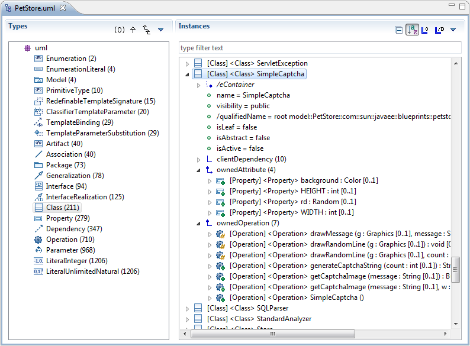
The SimpleTransformationsChain plugin offers simple Eclipse contextual actions to dynamically launch the additionally provided features.
You can launch the "Discover UML model from Java project" action from a Java project by right-clicking on the corresponding Java project (in your workspace) and then selecting the appropriate action under Discovery > Discoverers in the provided contextual menu:
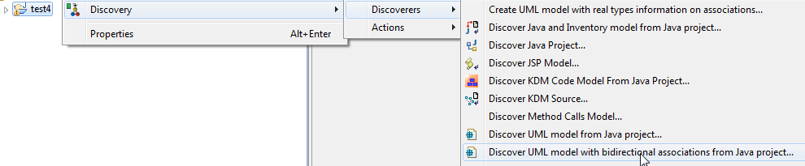
The SimpleTransformationsChain plugin is registered with the "discoverer" extension point, so in launch configurations, you are able to create a discoverer launcher dedicated to a project:
Open the launch configurations:
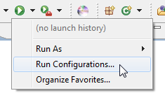
Create a new MoDisco Discovery launch configuration, and select the discoverer "discoverUMLModelWithBidirectionalAssociationsFromProject" from the drop-down list:
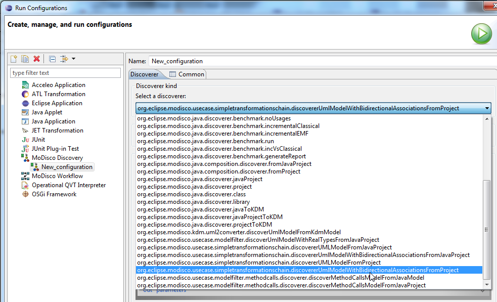
Then, select your project in the "Source element" field:
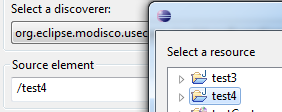
And finally, click Run to start the discovery.
To illustrate the SimpleTransformationsChain plug-in, we will use a sample inspired from the Pet Store Application.
Sources of the Pet Store application are available here: http://www.oracle.com/technetwork/java/petstore1-3-1-02-139690.html
You may have to download several libraries to obtain an eclipse project without errors (JPA, JTA, JSF-apis and Servlets-jsp-apis). A complete bundle is also available from Mia-Software... To view this application in your Eclipse workspace, you will have to extract the content of this archive, and use the "import" wizard (import project in workspace).
We will explain different ways to obtain the UML model; it will demonstrate how several simple steps have been combined to build a complex task : discover a UML model from a java project.
There are several tools that are each able to perform a specific task; we will see how each task works.
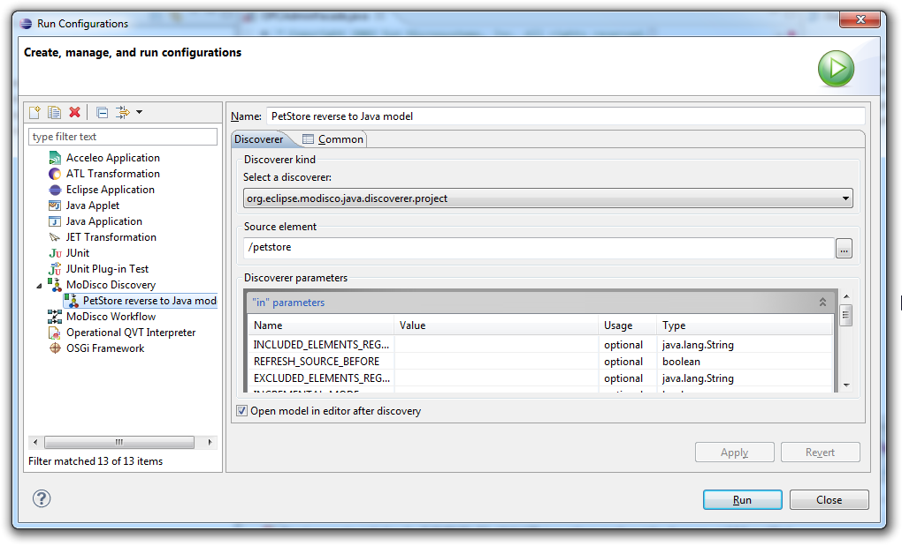
Finally, press the Run button to get the Java model.
You could also use the the contextual menu (right click) when the project containing the Pet Store application is selected. Select Discovery > Discoverers > Discover Java Project:
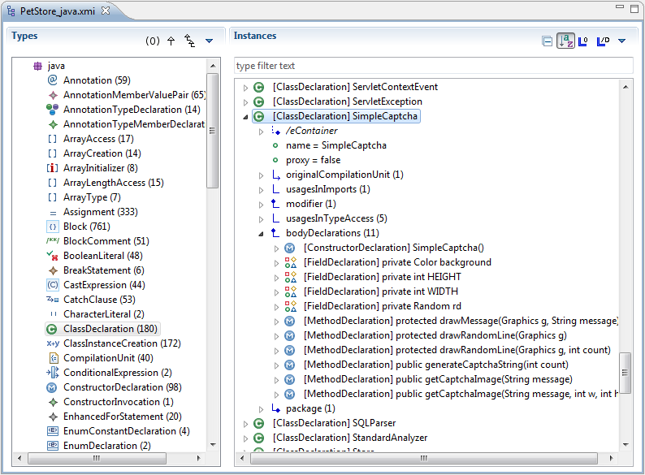
Using the ATL transformation javaToKdm, we will transform the Java model into a KDM model. We have to define another configuration to perform this transformation:
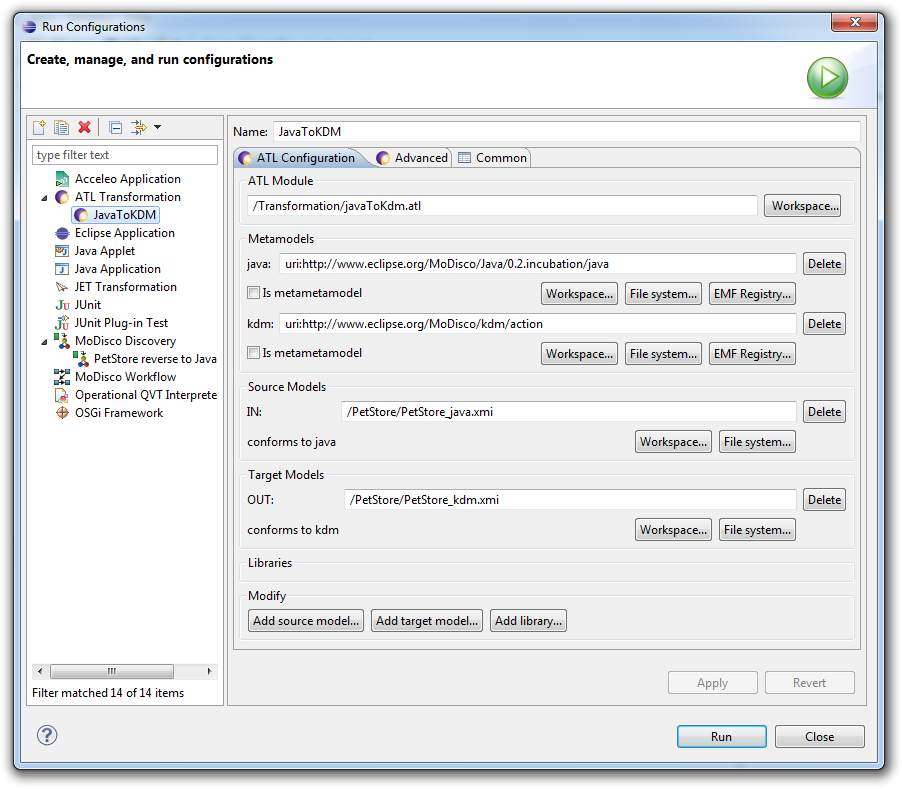
Finally, press the Run button to get the KDM model.
You could also use the the contextual menu (right click) when the Java model of the Pet Store application is selected: Discovery > Discoverers > Discover KDM model from Java model.
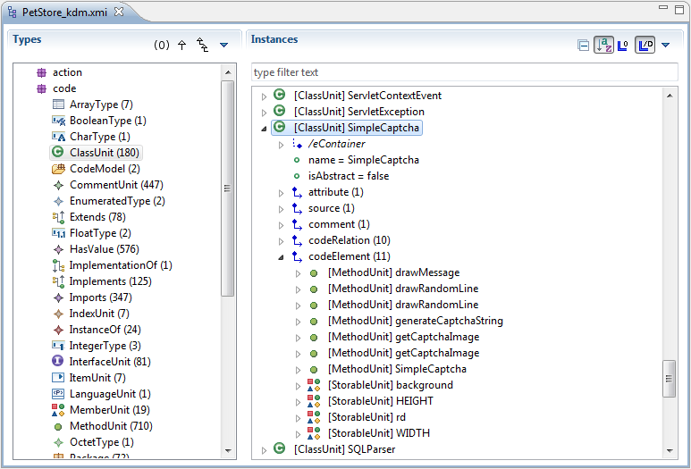
Using the ATL transformation KDMtoUML, we will transform the KDM model into a UML model.
We have to define another launch configuration to perform this transformation:
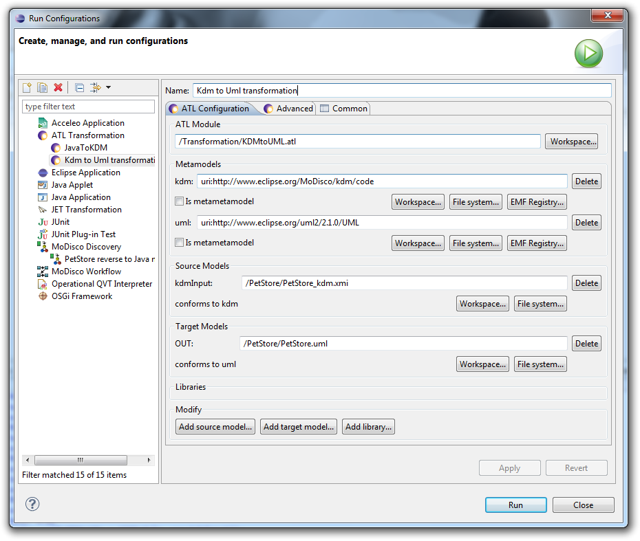
Finally, press the Run button to get the UML model.
You could also use the the contextual menu (right click) when the kdm model of the Pet Store application is selected: Discovery > Discoverers > Discover UML model from KDM model.
To be able to chain previous tasks, MoDisco provides a workflow initializer:
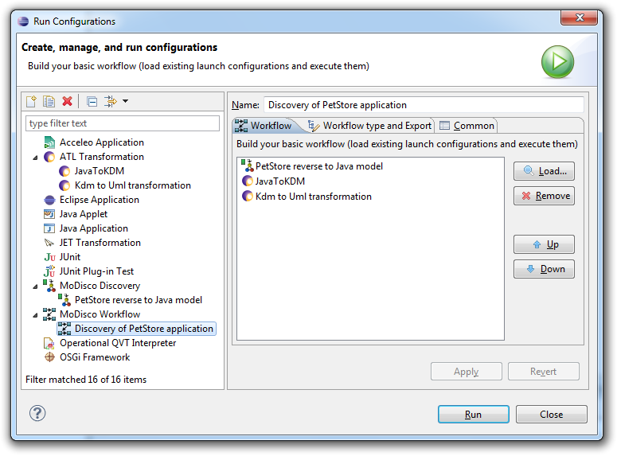
This is a first way to get a UML model from a java application. However when parameters change (the selected java application, target UML model, ...), you will have to change the different configurations in order to restore the coherence of all steps, by making sure the input of each step is produced by the previous step.
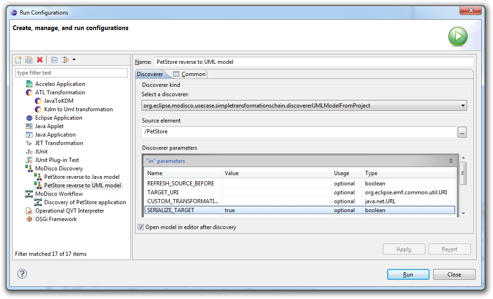
You could also use the the contextual menu (right click) when the Pet Store application project is selected: Discovery > Discoverers > Discover UML model from Java project
There are different possibilities for visualizing and exploring the target model.
The MoDisco model browser displays the model as a tree. It proposes a view of all instances sorted by metaclass, and offers the possibility to visualize all links in the model (whether empty or not, with cardinality, etc.)
After the installation of UML2 Tools, a component of the Modeling/MDT project, you will be able to initialize class diagrams from the UML model.
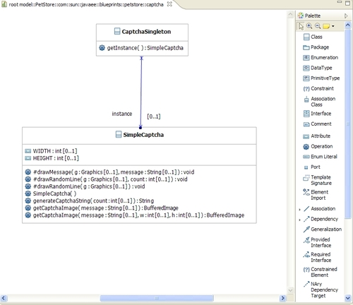
As this component is an aggregation of existing components, its limitations reflect this architecture: the main limitations come from the KDM to UML converter.
Gabriel Barbier ( Mia-Software)